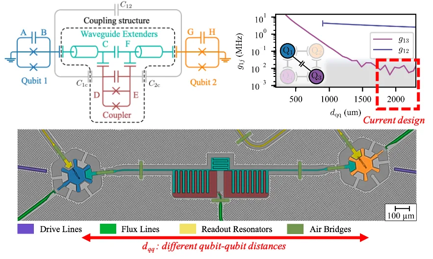
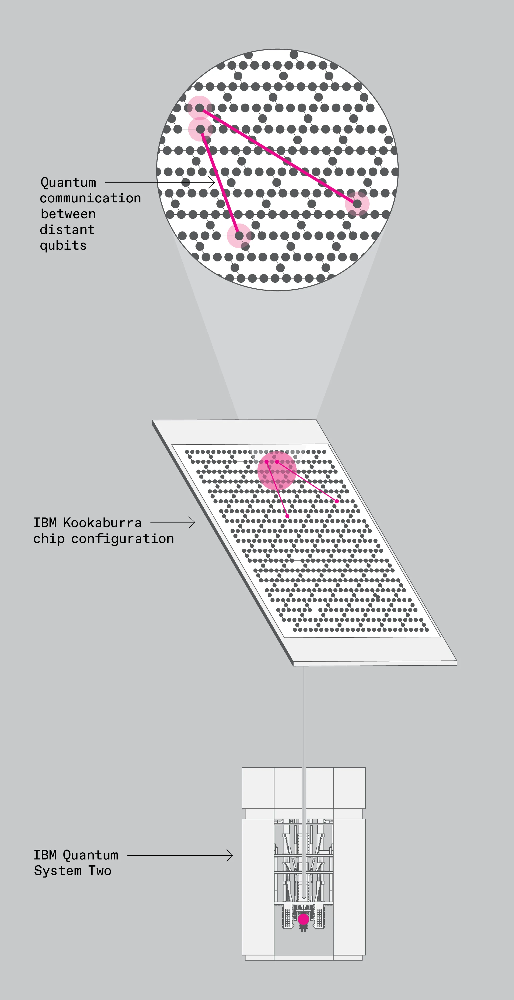
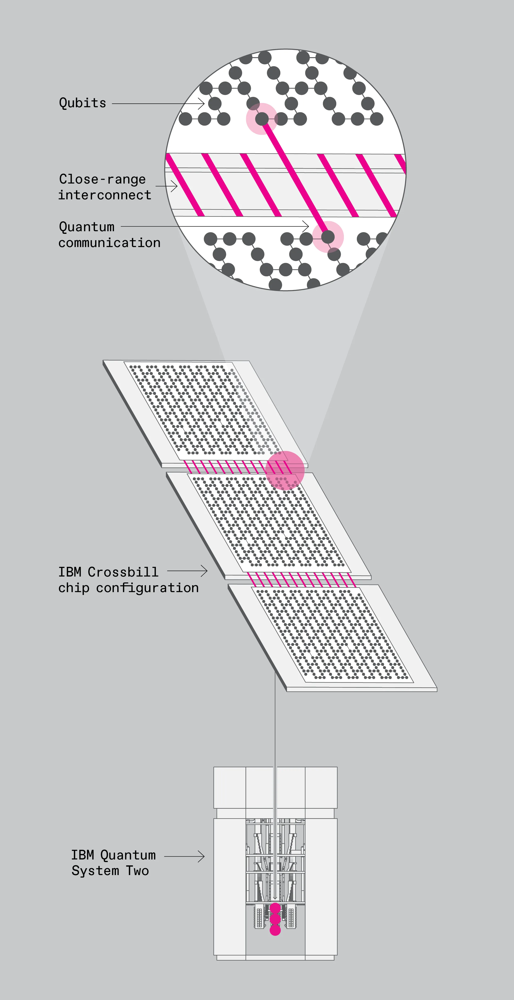
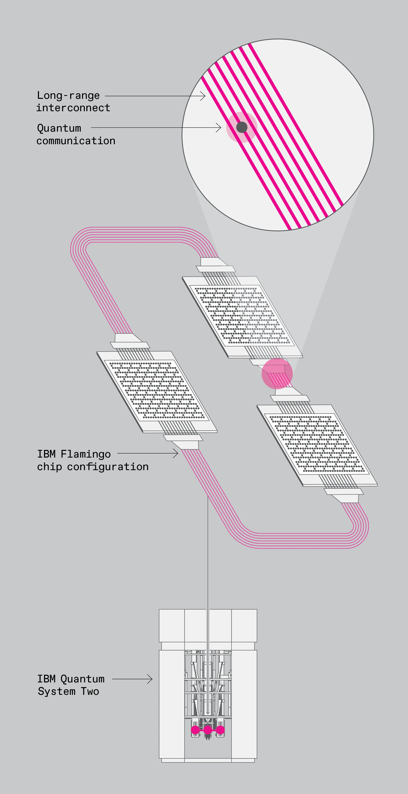

PHYS598500 · Week 10 · T4
Surface-Code Hardware Cycle：排程、解碼與 Logical-Qubit 資源
The Surface-Code Hardware Cycle: Scheduling, Decoding, and Logical-Qubit Resources
本週定位
學習成果
- 畫出 rotated surface-code patch 的 data/ancilla/coupler 角色。
- 建立 syndrome-extraction cycle 與 four-layer two-qubit schedule。
- 理解 detection event、space-time decoding、Pauli frame 與 decoder latency。
- 把 logical-error scaling、leakage、correlated faults 與完整資源成本納入架構決策。
兩小時授課配置
| 時間 | 要回答的小問題 | 當段產出 |
|---|---|---|
| 0–20 分 | 為什麼 Surface code 適合超導量子晶片？ | 畫出 data／ancilla／local coupler patch。 |
| 20–40 分 | 一輪 syndrome extraction 應該怎麼排？ | 完成避免 gate conflict 與 hook error 的四層排程。 |
| 40–60 分 | Syndrome measurement 本身會出錯，怎麼辦？ | 把 syndrome history 轉成 space-time detection events。 |
| 60–70 分 | 休息 | 保留 cycle timeline 與 detection graph。 |
| 70–90 分 | Decoder 要多快才夠快？ | 建立 quantum–classical latency budget。 |
| 90–110 分 | Physical error 降低，logical error 就一定下降嗎？ | 檢查 threshold scaling、leakage 與 correlated faults。 |
| 110–120 分 | 一顆 logical qubit 真正需要多少硬體與古典資源？ | 完成 qubit、I/O、cycle、decoder 與 magic-state 資源表。 |
合計：120 分鐘
第一段：把 Surface code 畫成可執行的硬體循環
本週驅動問題：如果 code 只存在於紙上的 stabilizer equation，就還不是量子電腦架構；每個 check 如何在真實晶片上被反覆執行？
0–20 分鐘：為什麼 Surface code 適合超導量子晶片？ W10-C1
Surface code 的直接工程吸引力是二維 local checks：data qubits 承載 logical information，measurement ancillas 分別取得 X-type 與 Z-type parity。學生用 rotated distance-3 patch 標出 data、ancilla、coupler 與 readout resonator；接著補上現實條件：frequency allocation、control line、readout multiplexing 與 spectator interaction。
20–40 分鐘：一輪 syndrome extraction 應該怎麼排？ W10-D1
黑板主線：cycle 是有 critical path 的 schedule
一輪簡化流程為 ancilla reset／prepare → four layers of entangling gates → ancilla measurement → data transfer。four-layer ordering 不能任意交換：同一 qubit 不可同時參與兩個 gate，且 ordering 會決定 ancilla error 傳播方向與 hook error 是否降低 effective distance。
t_{\mathrm{cycle}}\approx t_{\mathrm{reset}}+4t_{2q}+t_{\mathrm{meas}}+t_{\mathrm{transfer}}
這只是 critical-path 起點；實際還要加入 single-qubit basis rotations、buffer、conditional reset、synchronization jitter 與不可完全平行的操作。
40–60 分鐘：Syndrome measurement 本身會出錯，怎麼辦？ W10-C2
單輪 syndrome 無法可靠區分 data error 與 measurement error。將相鄰 rounds 的 syndrome 差分成 detection events，時間軸就成為 code 的第三個維度。學生把三輪 parity record 畫成 space-time graph，標出 data fault 造成的 spatial pair 與 measurement fault 造成的 temporal pair。
休息與黑板保留
保留 patch、four-layer schedule、cycle-time equation 與 space-time detection graph。
第二段：Decoder、logical scaling 與系統資源
70–90 分鐘：Decoder 要多快才夠快？ W10-C3
decoder 由 noisy detection events 推斷最可能的 error chain，輸出 correction 或更新 Pauli frame。throughput 必須跟上每輪 syndrome 產生率；latency 則限制 logical measurement、feed-forward、lattice surgery 與 magic-state pipeline。因而 QEC 的資料路徑跨越 cryogenic readout、ADC／FPGA、network、decoder accelerator 與 control scheduler。
延遲預算案例
若 cycle 為 1 µs、每輪每個 ancilla 產生一個 bit，請估算 1000、10000、100000 個 ancillas 的 raw syndrome rate。再分別標出「必須逐輪吞吐」與「必須在 logical branch 前完成」的兩種時間要求；兩者不是同一個規格。
90–110 分鐘：Physical error 降低，logical error 就一定下降嗎？ W10-C4
p_L\sim A\left(\frac{p}{p_{\mathrm{th}}}\right)^{(d+1)/2}
這條式子只表達 below-threshold 的理想趨勢，不是 universal exact law。\(A\) 與有效 threshold 會受到 circuit schedule、decoder、boundary、bias、leakage、crosstalk 與長時間 correlation 改變。distance 增加通常讓 data/ancilla 數量按 \(O(d^2)\) 成長，也同步增加 couplers、readout channels、cycle data 與 calibration surface。
架構任務
比較兩個改善方案：A 將 two-qubit error 降低 30%，但 cycle 慢 20%；B 將 readout 加快 40%，但 leakage doubling。學生不能用單一 component metric 選答案，必須指定 noise model、decoder 與最後要比較的 logical error per cycle／per unit time。
整合：一顆 logical qubit 真正需要多少硬體與古典資源？
完成一張 resource sheet：physical qubits、couplers、readout bandwidth、cycle time、decoder throughput／latency、leakage removal、logical operations 與 magic-state demand。最後用一句話回答：目前設計的真正 bottleneck 是 qubit fidelity、控制平行度、量測、decoder，還是製程 yield？
教材深挖 1：量子計算硬體基礎
整合自既有 Insight iHBAR 教材：SCQ_advanced/A.html
量子計算在特定問題上蘊含遠超古典電腦的運算潛力，其硬體卻也面臨控制困難、操作時間過短的問題。量子計算的硬體以量子位元作為的核心元件，還需搭配操控量子位元狀態的驅動元件、量子位元狀態的讀取元件。此外，因為量子位元容易受到外界干擾的特性，量子位元的校正/微調元件、量子糾錯元件等。簡而言之可以包含以下：
- 量子位元
- 驅動
- 讀取
- 校正
- 糾錯
事實上，在現今的記憶體中，其實也包含以上不同的硬體分工，只是在量子計算裡面，以上不同元件需要整體考慮。更具體一點的講法，因為不同元件會互相交互作用，當我們利用量子物理學，寫下其整個量子電路的 Hamiltonian（或薛丁格方程式），其交互作用像會去"修正"量子位元本身的特性，一方面我們利用"修正"的特性來操作和讀取量子位元的資訊，然而另一方面卻也導致量子位元受到影響，偏離理想狀態、導致錯誤產生。
本文專注在超導量子電路，量子電路中包含的元件分類如下（兩種切入點）：
| 以功能性為觀點 |
1. 量子位元（資料儲存） 2. 驅動：耦合電路或 LC 共振器（作運算） 3. 讀取（readout）：LC 共振器與饋線 4. 校正：Flux line（改變量子位元頻率） 5. 糾錯：量子位元（糾錯用） |
|---|---|
| 以元件種類為觀點 |
1. LC 電路 a. LC 共振器（線性 LC 電路）：用作讀取量子位元狀態（readout resonator），有時也可以作為量子位元間耦合（間接耦合） b. 量子位元（非線性 LC 電路）：部分作為資料儲存、部分作為糾錯用位元 2. 饋線（feedline）：外部訊號送入與讀出 3. 耦合元件： a. 操作、改變量子位元狀態 b. 量子位元之間的直接耦合 c. 將外部訊號與各元件交換訊號 4. Flux line：調整改變量子位元頻率，讓量子位元在指定頻率運作 |

▲首先可以先欣賞一下單量子位元的 layout。（a）顯微鏡底下的電路圖，（b）對應的電路圖，此圖中有一個 Qubit（紅色 Transmon）、一個 readout resonator（天藍色），兩條 feedline 個別驅動（Drive）量子位元與 readout resonator。各元件間利用電容作耦合。另外有一條 Flux line 連到 Qubit 旁，會產生磁場來改變 Transmon 的操作頻率。（c）readout resonator 因為與量子位元耦合，會受到量子位元在 \(\ket{0}\) 或 \(\ket{1}\) 狀態的差異產生頻譜的位移，利用 readout resonator 頻譜的位移的特性來得知量子位元的狀態。
Ref:arxiv.org/pdf/2106.11352

▲這張圖是兩個量子位元（Transmon）藉由一個 resonator 耦合在一起（間接耦合），可以注意的是下方一行文字寫這個 resonator 兼具耦合兩個量子位元的功能。
Ref:doi.org/10.1038/nature08121

▲這張圖是四個 Qubit，中間由 bus resonator 串連耦合四個 Qubit。其中四個接頭直通 Qubit，是 flux-line，另外左上跟右下各有一條 readout feedline I/O，各自連結到兩個 readout resonator 並與 Qubit 耦合（等於說一條 readout feedline 會同時讀取兩個 Qubit）。
▲這張是另一種 5 qubit layout 的示意圖。其中 Z 是 flux line，XY 是 Drive line，5 個 Qubit 是直接電容耦合。此外，每個 qubit 都有自己的 readout resonator，在上方併入（此圖顯示是電感耦合）到 readout line。
doi.org/10.1038/nature13171
邁向多 Qubit 模組

▲要達到量子計算，需要同時操作許多 Qubit，同時因為糾錯的關係，也需要額外的 Qubit 來進行糾錯。下圖是一個 17 位元的實驗性量子晶片，排列方式是一種稱為 surface code（表面碼）的量子糾錯型態，圓形為 Qubit，粉色及紅色是 Data Qubit，天藍色及綠色是 Check Qubit。每個 Qubit 都連接 7 條線（暱稱為 Starmon），其中 4 條為 Qubit 間耦合、1 條 Flux line、1 條 Drive line、1 條 Readout resonator。Readout resonator 分別併入到三條 feedline。
https://arxiv.org/pdf/1612.08208
教材深挖 2：IQM量子電腦科技發展
整合自既有 Insight iHBAR 教材：ASW2026/B.html
IQM是一家芬蘭專注於超導量子電腦的供應商，結合自研超導量子系統、量子雲端平台，協助學研機構與高效能運算（HPC）中心探索與落地量子計算應用。
IQM Qubit Architecture
| Crystal | Star | Constellation | |
|---|---|---|---|
| 拓樸 |

|

|

|
| 組成 | 由量子位元、可調耦合器組成 | 加入計算性諧振器 | 由六邊形 Star 結構為單元組成 |
| 特點 |
|
|
|
▲ IQM的量子位元拓樸策略。
從傳統的四邊形架構(Crystal)，到IQM獨家的六邊形Constellation架構，顯示出IQM在超導量子位元QPU設計上，針對拓樸優化的思考與嘗試。
理想的量子計算需要量子傅立葉轉換（QFT），如果量子位元間的連接性越大，則可以減少SWAP等操作來縮短電路深度。
但超導量子位元是2D的電路設計，較難達到All-to-All Connectivity，故如何提升量子晶片的操作性，一直是當前活躍的研究主題。
Ref: arxiv.org/pdf/2503.12869
Ref: https://arxiv.org/pdf/2503.10903
Ref: https://meetiqm.com/blog/iqm-constellation-a-new-quantum-processor-architecture-for-scalable-error-correction/

▲ 用交錯隨機基準測試（Interleaved Randomized Benchmarking, IRB）來量測IQM Star量子閘的保真度（fidelity）。MOVE閘是IQM針對Star架構設計的閘。
Ref: arxiv.org/2503.10903
解讀IQM Roadmap

▲ 讓量子電腦達到實用FTQC量產化的研發上，IQM認為是三個重點：
Quality:提升量子晶片的品質，包含單個位元的Fidilty、2-Qubit Gate Fidelity，以及整個電路上Crosstalk的壓制。
Scaling:在單晶片上集成大量高品質的量子位元，目標百萬顆以上。
Topology:不同的Architecture可以實踐不同的閘運算自由度、減少電路深度、增加編譯的彈性。
Ref: Adopt from https://meetiqm.com/technology/roadmap/
晶片上位元佈局研究
|
 |

|
|---|---|
| 透過研究不同間距，來衡量量子位元之間的耦合與串擾。 | 覆晶封裝下，不同走線位置對量子位元的影響。 |
Ref: 10.1103/PRXQuantum.4.010314
▲ 預計在APS 2026，IQM會發表在Constellation上加入遠程耦合的位元交互作用。是為了對應到qLDPC的發展。
qLDPC 量子糾錯
這邊來提一下為何IQM會進行遠程交互晶片設計，相關技術可以參考IBM在2024年qLDPC的工作。糾錯碼在實用計算上佔有非常重要地位，如何在最低的開銷下達到最佳的資訊傳輸和糾錯冗餘一直是工程上權衡的課題。 由於量子計算不可測量的特性，讓量子糾錯的難度更高。 超導量子位元屬於二維的量子晶片，當前最主流的量子糾錯是表面碼Surface Code。 Surface Code優點是對於connectivity的需求只需要鄰近的Qubit，不需要遠程交互作用，但缺點是Ancilla Qubit的數量隨系統增加同步增加，實用上會增加系統複雜度與錯誤。 IBM在2024年展示了qLDPC (quantum Low-Density Parity Check code)混合Surface Code的量子糾錯運算。 qLDPC需要長程的交互作用，得益於IBM多層晶片製程的佈線，可以實現較複雜的量子位元間交互連接性拓樸。

▲ IBM論文中比較傳統的表面碼（Surface Code）與新型且高效的雙二分碼（Bivariate Bicycle Code 簡稱 BB code，屬於qLDPC的一種）。
圖a是表面碼 (Surface Code)。
圖bBB 碼 (Bivariate Bicycle Code)的幾何結構： 它被「嵌入」在一個拓樸環面（Torus，甜甜圈形狀）上，每個量子位元有 6 條線連出去（4 條短程，2 條長程）。
圖c混合架構與操作。
傳統表面碼如果要達到同樣的容錯水準，可能需要數千個位元，而 BB 碼只需要一百多個。
Ref: 10.1038/s41586-024-07107-7

▲ 前面所說的BB Code嵌入在拓樸環面的示意圖，由IBM所繪製。
Ref: https://www.ibm.com/quantum/blog/large-scale-ftqc

▲ IBM多層晶片製程的佈線，可以實現較複雜的量子位元間交互連接性拓樸。更多量子晶片介紹可以參考：邁向Scalable QPU-量子晶片設計。
Ref: https://thenewstack.io/ibm-cracks-code-for-building-fault-tolerant-quantum-computer/
Ref: https://www.hpcwire.com/2025/06/10/ibm-sets-2029-target-for-fault-tolerant-quantum-computing/
教材深挖 3：FUJITSU：FTQC研發與挑戰
整合自既有 Insight iHBAR 教材：ASW2026/F.html
FUJITSU是日本量子電腦整機的製造、開發商，與日本RIKEN理研量子中心有深度合作，目標是開發出日本自研自製的FTQC量子電腦。這次演講的內容主要介紹、評估邁向大規模FTQC實用化所需要面對的課題。
▲ FUJITSU在日本有企業級資料中心、超級運算中心建置的解決方案。下方有趣的提到FUJITSU各個階段算力提升的方式：
運算頻率提升：透過CPU高頻運算
多核心運算：多核心CPU
多叢集運算：叢集高速互聯
記憶體內運算/近記憶體運算：克服記憶體頻寬牆，試圖減緩記憶體-運算核心資料間交換造成的延遲。
此外，也投入下一代量子科技、量子外延科技的計算發展。
量子電腦的種類
▲ 量子電腦的種類大致上可以分類為閘控量子計算(Gate-Base)和絕熱量子計算(Annealing)兩大類。在計算科學裡，這兩類量子計算算力等價，可以互相模擬，但針對不同問題所需的計算開銷不同。
閘控量子計算(Gate-Base)較容易與傳統計算做類比，而絕熱量子計算適合做最佳參數分析（即基態搜索）。FUJITSU針對多項技術都有投入開發。

▲ FUJITSU的量子電腦路線圖。FUJITSU研究包含超導量子電腦、鑽石自旋量子電腦。「STAR架構」一種基於相位旋轉閘（phase rotation gates）的量子運算架構。
Ref: https://global.fujitsu/en-global/technology/research/quantum
Ref: https://global.fujitsu/-/media/Project/Fujitsu/Fujitsu-HQ/technology/research/quantum/event-202503/FQD2025japan_guest_talk3.pdf
FUJITSU和RIKEN多量子位元系統開發
▲ FUJITSU和RIKEN的量子計算中心負責人中村泰信(Yasunobu Nakamura)合作開發多量子位元系統。
Nakamura Sensei和台灣中研院關鍵議題研究中心的量子計算負責人 陳啟東 特聘研究員 及 蔡兆申院士 早年曾多次合作開發Josephson Junction為基礎製作量子位元的可行性，包含Cooper Pair Box, FLux Qubit等，是現代Transmon的前身，奠定大量基礎。
▲ FUJITSU和RIKEN合作開發64位元，並希望透過模組化的方式，組合成256位元QPU。擴展研究重點包含如何沿用既有64位元的硬體設計成果、提升裝置密度，但也要避免熱功率過度上升。
大尺寸超導電路面板與量子位元變異性
多量子位元晶片的製程開發，其實類似半導體晶圓產業，透過在大面積的晶圓上面集成大量量子電路。相關的量產議題，便牽涉到晶圓上量子位元的均質性。 由於量子相應非常敏感、約瑟夫森節需要極高的工藝，分佈在晶圓上的超導量子位元特性實際上是有一定差異的。可以透過後處理，來將晶圓上的量子位元調教到相近的特性。
▲ 這張圖展示在晶圓上製備約瑟夫森節時，量子位元會因為約森夫森節的氧化層/絕緣層品質差異，展現出不一樣的阻值，如果不能精確控制量子位元的特性，會在QPU上產生非預期的串擾 （ZZ crosstalk）。
▲ RIKEN透過發展雷射加熱後處理的方式，提升量子位元的均值性。利用探針逐一量測量子位元，並施加雷射加熱調整約瑟夫森節的特性。
▲ 然而，在邁向更多量子位元的製程時，逐一量測、雷射對準加熱可能不是一個能快速擴展化的方式。
下一代的後處理，希望整合量子電路上既有的線路，直接施加偏壓電脈衝，來實踐均質化。
量子計算中心的基礎建設尺度
邁向「實用化」的量子計算優勢，FUJITSU的發展藍圖認為需要百萬個（～1M）物理量子位元的數量級組成的量子電腦。因為量子糾錯的需求，一個「實用的」邏輯位元，在目前的技術下，推估需要千顆個物理量子位元共同組成。 這裡說明一下，實驗上與早期量子優勢展現的實驗中，對於錯誤率的容忍較高，一個具有糾錯能力的邏輯量子位元大約在100個上下，故1000~5000個物理量子位元晶片是現在量子研究、廠商追逐的目標。 透過此類1000~5000個物理量子位元等效於20~50個邏輯量子位元的計算能力，來展示量子優勢。 如果要進行更實用、大規模的量子超級計算，一方面牽涉到大量的量子位元做併行（邏輯位元數要多）、另一方面也需要更深的邏輯電路深度（錯誤率要低、或是糾錯能力要強），對物理位元常是是平方級的成長。 然而，更大量的量子位元亦會產生更複雜的串擾，反而增加錯誤率，又需要更多資源來糾錯。這導致目前推估實用的量子計算，會需要整合百萬個量子位元才能具有實用的量子優勢。 百萬個量子位元帶來的控制儀器整合、高功率超低溫冷卻議題，將超越現在AI數據中心的耗電量，對電力基建帶來沈重的負荷。
▲ FUJITSU說明Early-FTQC和實際FTQC所需要的量子位元。
▲ FUJITSU推算規模化的量子超算中心所帶來的冷卻與耗電議題。一方面，超大型數據中心的冷卻會有大量的噪音，這會干擾量子位元造成錯誤率上升。
另一方面，量子超算中心的耗電，粗估將是TGW3等級，是超過500座核電廠的裝置容量！
▲ 由於上述推估量子超算中心的規模極其巨大，FUJITSU便提出一些開放問題，相關的基建要如何達成？由誰協助？以及如何降低相關的成本來增加可實踐性。
教材深挖 4：邁向超大型量子計算：跨晶片量子互聯
整合自既有 Insight iHBAR 教材：QC_hardware/V4.html
對超導量子電腦而言，隨著 Qubit 數量增加，晶片面積、佈線密度、頻率配置、微波串擾、製程良率、封裝複雜度與錯誤校正需求都會快速變得嚴苛。 要實現真正可擴展的量子電腦，關鍵問題不只是「如何製造更多 Qubit」，而是如何讓大量 Qubit 在可控制、可讀出、可糾錯的條件下共同運作。
因此，大型QPU的發展方向，逐漸從「單一巨大晶片」邁向模組化量子系統。 也就是說，未來的 QPU 不一定是一顆極大的晶片，而可能是由多個量子晶片、多個封裝模組，甚至多台稀釋製冷機共同組成的量子計算叢集，量子互聯（Quantum interconnection） 便成為實現 scalable QPU 的核心技術。
| 擴展方式 | 優點 | 主要瓶頸 |
|---|---|---|
| 單一晶片放大 | 架構直觀，晶片內耦合距離短，控制模型相對單純。 | 晶片面積、佈線密度、製程良率、頻率擁擠與串擾會快速增加。 |
| 單一製冷機內多晶片 | 可透過 chiplet、封裝與模組化技術提升總 Qubit 數量。 | 低溫空間有限，封裝、垂直互聯與同步控制變得更複雜。 |
| 多製冷機量子連結 | 可把 QPU 分散到多台 cryostat，形成更大型的量子計算叢集。 | 需要低損耗、低熱雜訊、相位穩定且可同步的量子通道。 |
- 從單一晶片到模組化 QPU
- 量子互聯的三個層級：C-coupler、M-coupler、L-coupler
- 為什麼錯誤校正需要更高連通性？
- 從拓展量子晶片到量子資料中心：邁向超大型量子計算
透過IBM Quantum 的發展路線可以清楚呈現了這種模組化趨勢。早期的量子處理器主要強調單晶片 Qubit 數量的增加，例如 Hummingbird、 Eagle、Osprey 與 Condor 等處理器。 然而，當系統邁向更高 Qubit 數量與錯誤校正需求時， 僅僅放大單一晶片已不足以支撐長期擴展。
因此，IBM 的架構開始朝向多晶片、多模組與多系統並行的方向發展。 例如 Heron 架構強調較高品質的中等規模晶片； Crossbill 與 Flamingo 則代表晶片間連接與模組化封裝； Kookaburra 進一步展示多晶片量子平行化的概念。 這些發展共同指向一個核心問題： 如何讓不同量子晶片之間有效交換量子資訊？
這裡需要區分兩種不同的連接方式。 第一種是 classical link，也就是利用即時古典通訊讓多個 QPU 協同執行任務。 第二種是 quantum link，也就是真正傳送量子態或建立量子相關性的通道。 前者較容易實作，後者則更接近未來大型容錯量子電腦所需的核心能力。
▲ IBM 量子處理器從單晶片大型化走向多晶片模組化。
Condor 代表單晶片 Qubit 數量的放大，而 Flamingo、Crossbill 與 Kookaburra
則開始導入晶片間量子通訊與模組化擴展。值得注意的是，晶片中的互聯有分成有分成古典互聯與量子互聯。
古典互聯基本上是針對微波控制/讀出的訊號，而量子互聯要求晶片間的交互作用維持量子效應。
Ref: https://spectrum.ieee.org/ibm-condor
▲ IBM Quantum Crossbill (左) 和 IBM Quantum Condor (右)。Condor 是單體大晶片設計，而Crossbill採用多晶片互聯設計。
Ref: https://www.ibm.com/quantum/blog/qdc-2024
▲ 兩個 IBM Quantum Eagle processors 透過 real-time classical link 連接。
這種架構讓多個 QPU 可以在同一個系統中協同運作，但它仍屬於 classical communication，
與真正的 quantum interconnect 不同。
Ref: https://www.ibm.com/quantum/blog/lo-locc-circuit-cutting
▲ IBM Heron的互聯架構，主要是共用控制/讀出的微波訊號總線，當前的控制/讀出的微波訊號是屬於古典信號控制，故這類互聯被歸類在古典互聯。
Ref: https://www.ibm.com/quantum/blog/ibm-quantum-roadmap-2025
IBM 將量子互聯分成不同尺度。 有些互聯用於同一晶片內部，增加非鄰近 Qubit 的連通性； 有些互聯用於相鄰晶片之間，形成多晶片模組； 也有些互聯則負責連接同一製冷機內距離較遠的晶片平台。 這些互聯技術針對同一台製冷機內的量子網路。
| 互聯類型 | 連接尺度 | 功能解說 |
|---|---|---|
| C-coupler | 同一晶片內非鄰近 Qubit 之間 | C-coupler 用於提高晶片內部連通性，使同一晶片上距離較遠、非鄰近的 Qubit 也能進行量子資訊傳輸。這對某些量子錯誤校正碼特別重要，因為錯誤校正不一定只依賴最近鄰 Qubit 互動。 |
| M-coupler | 相鄰晶片之間互聯 | M-coupler 是短距離 chip-to-chip quantum interconnect，用於在相鄰量子晶片之間傳送量子資訊。它適合把多個較小晶片組合成更大的模組化量子處理器。 |
| L-coupler | 同一製冷機內較遠晶片之間 | L-coupler 是較長距離的量子互聯，可在同一台 cryostat 內不同平台或較遠晶片之間路由量子資訊。由於傳輸距離增加，它對損耗、延遲、相位穩定性與同步控制提出更高要求。 |
|
 |
 |
 |
|---|
▲ (左)C-coupler： 用於提高同一晶片內部的 Qubit 連通性。在許多量子錯誤校正架構中，Qubit 不只需要與最近鄰互動，也可能需要與較遠的 Qubit 傳遞資訊。C-coupler 的目標就是讓非鄰近 Qubit 之間也能建立有效的量子通訊路徑。
(中)M-coupler： 用於相鄰量子晶片之間的短距離互聯。它可以在鄰近晶片之間傳送量子資訊，適合把多個較小晶片組合成較大的模組化量子處理器。
(右)L-coupler： 用於較長距離的量子互聯。它可在同一製冷機內不同平台上的量子晶片之間傳送量子資訊，代表量子晶片不必全部擠在同一個局部封裝區域中。但距離增加也會帶來更嚴格的損耗、延遲與傳輸速率限制。
Ref: IEEE Spectrum / IBM, https://spectrum.ieee.org/ibm-quantum-computer-2668978269
▲ M-Coupler 將多個量子處理器透過連接通道共同工作，使量子計算不再侷限於單一晶片。
Ref: https://www.ibm.com/quantum/blog/ibm-quantum-roadmap-2025
--dec0588c.webp)
▲ 用於IBM Flamingo的L-Copuler 展示了模組化量子處理器與長距離連接的設計方向。
這類架構的重點不只在於增加 Qubit 數量，而是讓多個量子模組能在可同步、可控制的條件下共同運作。
Ref: https://www.ibm.com/quantum/blog/qdc-2024
Ref: https://www.forbes.com/sites/karlfreund/2023/12/04/ibm-launches-quantum-system-two-and-a-roadmap-to-quantum-advantage/
▲ C-, M-, L-Coupler可同時用於擴展量子晶片互聯。
Ref: Forbes (https://www.forbes.com/sites/karlfreund/2023/12/04/ibm-launches-quantum-system-two-and-a-roadmap-to-quantum-advantage/) / IBM
▲ Kookaburra 展示多晶片量子處理器平行化互聯的概念。多個量子晶片透過量子連接共同組成更大的處理單元。
Ref: https://www.ibm.com/quantum/blog/ibm-quantum-roadmap-2025
從這三種互聯可以看出，大型量子電腦的擴展其實有多個層級：第一層是同一晶片內的 Qubit 連通性；第二層是相鄰晶片之間的 chip-to-chip interconnect；第三層是同一製冷機內不同屏蔽罩之間的長距離連結；再往外，才是多台製冷機之間的inter-cryostat quantum link。
在小型量子處理器中，最近鄰耦合通常已足以執行許多基本量子電路。但在QEC校正架構中，情況會變得更複雜。 許多高效率的量子錯誤校正碼，例如 LDPC code， 可能需要 Qubit 之間具備更高的非局域連通性。 如果所有互動都必須透過最近鄰交換完成，則會引入額外的 SWAP gate、 增加電路深度，並累積更多錯誤。
qLDPC 量子糾錯
IBM在2024年展示qLDPC量子糾錯的工作。QEC 量子糾錯碼在實用計算上佔有非常重要地位，如何在最低的開銷下達到最佳的資訊傳輸和糾錯冗餘一直是工程上權衡的課題。 由於量子計算不可測量的特性，讓量子糾錯的難度更高。超導量子位元屬於二維的量子晶片，當前最主流的量子糾錯是表面碼Surface Code。 Surface Code優點是對於connectivity的需求只需要鄰近的Qubit，不需要遠程交互作用，但缺點是Ancilla Qubit的數量隨系統增加同步增加，實用上會增加系統複雜度與錯誤。 IBM在2024年展示了qLDPC (quantum Low-Density Parity Check code)混合Surface Code的量子糾錯運算。 qLDPC需要長程的交互作用，得益於IBM多層晶片製程的佈線/C-Coupler，可以實現較複雜的量子位元間交互聯接性拓樸。
▲ IBM論文中比較傳統的表面碼（Surface Code）與新型且高效的雙二分碼（Bivariate Bicycle Code 簡稱 BB code，屬於qLDPC的一種）。
圖a. 是表面碼 (Surface Code)。
圖b. BB 碼 (Bivariate Bicycle Code)的幾何結構： 它被「嵌入」在一個拓樸環面（Torus，甜甜圈形狀）上，每個量子位元有 6 條線連出去（4 條短程，2 條長程）。
圖c. 混合架構與操作。
傳統表面碼如果要達到同樣的容錯水準，可能需要數千個位元，而 BB 碼只需要一百多個。
Ref: 10.1038/s41586-024-07107-7
▲ 前面所說的BB Code嵌入在拓樸環面的示意圖，由IBM所繪製。
Ref: https://www.ibm.com/quantum/blog/large-scale-ftqc
因此，C-coupler、M-coupler 與 L-coupler 的意義不只是「把晶片接起來」， 而是為未來的錯誤校正邏輯 Qubit 提供更彈性的連通圖。 從這個角度看，量子互聯不只是硬體封裝問題， 也直接影響量子錯誤校正碼、編譯策略與系統架構。
當量子電腦從單一 QPU 走向量子資料中心時， 系統架構會更接近一種 hybrid quantum-classical infrastructure。 在這個架構中，QPU 負責量子態演化與量子測量； classical cluster 負責編譯、排程、最佳化、錯誤解碼與 feedback； runtime system 則負責把量子任務分配到合適的硬體資源。
--351fcadf.webp)
▲ IBM的超算-量子混合計算預想圖。規模化的量子位元計算，將從晶面內互聯、跨晶片互聯、製冷機內跨封裝互聯，將要邁向跨製冷機量子互聯，將在後續做進一步介紹。
(上)Ref: https://spectrum.ieee.org/ibm-quantum-computer-2668978269
(下)Ref: https://www.forbes.com/sites/karlfreund/2023/12/04/ibm-launches-quantum-system-two-and-a-roadmap-to-quantum-advantage/
因此，scalable QPU 的核心並不是單一層級的突破， 而是多個層級共同成熟： 晶片內部需要更好的 Qubit 連通性； 晶片之間需要低損耗的 chip-to-chip quantum interconnect； 製冷機內部需要長距離且相位穩定的量子通道； 多台製冷機之間則需要能夠維持同步與量子相關性的 inter-cryostat link。
從 IBM Quantum 的發展可以看出，C-coupler、M-coupler 與 L-coupler 分別代表不同尺度的量子互聯： 從晶片內非鄰近 Qubit 的連接，到相鄰晶片間的短距離連接， 再到同一製冷機內較長距離的量子連接。 它們共同指出一個重要方向： 量子電腦的未來，不只是更大的晶片，而是更好的量子網路化架構。
教材深挖 5：邁向超大型量子計算：超算-量子混合計算
整合自既有 Insight iHBAR 教材：QC_hardware/WA.html
當我們討論「超大型量子計算」時，直覺上常會想像一台擁有數十萬、甚至數百萬量子位元的巨大量子電腦。 然而，真正可用的量子計算系統並不會只是一台孤立的低溫儀器，而更接近一座結合 高效能運算（High Performance Computing, HPC）、古典控制系統、低溫量子處理器（QPU）、 即時解碼器與雲端排程軟體的「量子中心超級電腦」（Quantum-centric Supercomputer）。
在這個架構中，量子電腦不是取代傳統超級電腦，而是成為傳統高效能運算系統中的一種特殊加速器。 CPU 與 GPU 負責資料前處理、參數最佳化、誤差緩解、結果分析與工作流管理； QPU 則負責處理某些具有量子結構的子問題，例如量子化學、材料模擬、組合最佳化或特定線性代數任務。
從單機量子電腦到量子中心超級電腦
傳統電腦的擴展方式，是從單一處理器走向多核心、叢集、資料中心與超級電腦。 類似地，量子電腦的擴展也不太可能永遠停留在「單一晶片 + 單一製冷機」的模式。 因為隨著量子位元數增加，系統會同時面臨低溫空間、控制線數量、讀出頻寬、校準複雜度、 熱負載與錯誤校正解碼速度等瓶頸。
因此，未來的大型量子計算很可能採用混合式架構： 由古典超算負責龐大的資料流與控制決策，再把適合量子加速的子問題送到 QPU。 這種模式不是「量子 vs. 古典」的競爭，而是「量子 + 古典」的協同運算。
--61c07389.png)
▲ IBM 繪製的架構圖，從當前的量子原型機，邁向實用化的量子計算需要加入大型古典超算機櫃整合。
Ref: https://spectrum.ieee.org/ibm-quantum-computer-2668978269
| 系統層級 | 主要角色 | 在混合量子運算中的功能 |
|---|---|---|
| CPU | 通用古典運算核心 | 負責程式排程、資料前處理、迭代控制、演算法流程管理，以及與雲端或 HPC 系統溝通。 |
| GPU | 大規模平行運算核心 | 負責張量運算、線性代數、機器學習、變分演算法中的梯度估計，以及量子電路模擬輔助。 |
| FPGA / ASIC | 即時控制與解碼硬體 | 負責低延遲回饋、脈衝控制、快速量測判讀、量子錯誤校正 syndrome decoding。 |
| QPU | 量子處理器 | 執行量子電路，處理量子疊加、糾纏與干涉所能加速的特定子問題。 |
| Runtime / Orchestrator | 運算協調層 | 在 CPU、GPU、FPGA 與 QPU 之間分配任務，決定哪些部分適合古典處理，哪些部分送入量子硬體。 |
為什麼量子電腦需要超算？
量子電腦本身並不是一台可以獨立處理所有任務的萬能機器。實際上，現在大部分量子演算法都需要大量古典運算配合。 例如在變分量子演算法（Variational Quantum Algorithms, VQA）中，QPU 負責執行參數化量子電路並輸出量測結果； 古典電腦則根據量測結果更新參數，再把新的參數送回 QPU。
這種「QPU 執行、古典電腦最佳化」的迴圈，使得量子計算天然就是一種混合計算。 當問題規模變大，古典端需要處理的資料、排程、最佳化與誤差緩解也會快速增加，因此超算系統會成為大型量子計算不可或缺的基礎設施。
| 混合計算任務 | 主要執行硬體 | 功能解說 |
|---|---|---|
| 量子電路編譯 | CPU / GPU | 將抽象量子演算法轉換成硬體可執行的閘序列，並考慮 qubit topology、coupling map 與閘誤差。 |
| 脈衝產生與控制 | AWG / FPGA / 控制電子學 | 把量子閘轉換為微波脈衝、磁通脈衝與讀出脈衝，送入低溫系統操控 QPU。 |
| 量子電路執行 | QPU | 在低溫環境中利用量子疊加、糾纏與干涉執行量子操作。 |
| 量測結果處理 | FPGA / CPU / GPU | 將微弱讀出訊號轉換為 classical bitstream，並進行分類、校正與統計分析。 |
| 誤差緩解與錯誤校正 | CPU / GPU / FPGA / ASIC | 在 NISQ 階段進行誤差緩解；在容錯量子計算階段則需要即時 syndrome decoding 與回饋控制。 |
| 工作流排程 | HPC / Cloud Runtime | 管理多個使用者、多個 QPU、多種古典資源之間的任務分配與資料流。 |
超算-量子混合架構中的關鍵概念
| 關鍵概念 | 說明 |
|---|---|
| Quantum Runtime | 負責把量子工作負載封裝成可執行任務，並協調 QPU、古典伺服器與雲端資源。 |
| Circuit Knitting | 將大型量子電路拆成多個較小電路，分別在不同 QPU 或不同時間執行，再由古典後處理將結果拼接回來。 |
| Error Mitigation | 在尚未完全容錯的量子硬體上，透過古典統計方法降低雜訊對結果的影響。 |
| Real-time Feedback | 量測結果必須在極短時間內回饋到控制系統，以支援動態電路與量子錯誤校正。 |
| Resource Orchestration | 當一個任務需要多個 QPU、多台 GPU 或多個 classical servers 時，系統必須自動管理資源配置與資料同步。 |
| Quantum Interconnect | 當 QPU 數量增加，系統需要能在模組之間傳送量子資訊的連結。 |
混合計算的典型流程
一個量子-古典混合計算通常不是單次送出量子電路就結束，而是由多次迭代構成。 古典端會根據每一輪量子量測結果調整下一輪的量子電路參數，使整體流程形成封閉回饋迴圈。
問題分解： 將原始科學或工程問題拆成古典可處理部分與量子加速部分。
量子電路產生： 由古典端產生參數化量子電路或特定 quantum kernel。
硬體編譯： 根據 QPU 拓撲、閘集合與校準資料進行 transpilation。
QPU 執行： 在低溫量子晶片上執行電路並量測輸出。
古典後處理： 使用 CPU/GPU 分析量測結果、估計期望值、更新參數。
迭代收斂： 重複執行直到能量、成本函數或目標指標收斂。
▲ 量子機器學習混合計算示意圖。
Ref: Quantum-Train: rethinking hybrid quantum-classical machine learning in the model compression perspective, DOI: 10.1007/s42484-025-00305-0
技術門檻
| 關鍵挑戰 | 說明 |
|---|---|
| 低延遲控制 | 量子錯誤校正與動態電路需要即時判讀量測結果，並在 coherence time 內完成回饋操作。 |
| 資料流瓶頸 | 大量 qubit 的重複量測會產生龐大 bitstream，需要高速資料擷取、壓縮、分類與儲存。 |
| 跨硬體排程 | CPU、GPU、FPGA、QPU 與雲端伺服器的運算節奏不同，必須透過 runtime 系統協調。 |
| 錯誤校正解碼 | 容錯量子計算需要即時處理 syndrome 資訊，解碼器可能需要 FPGA、ASIC 或 GPU 加速。 |
| 多 QPU 擴展 | 單一 QPU 的 qubit 數量有限，未來必須透過模組化 QPU 與量子連結擴大有效計算空間。 |
| 軟硬體共同設計 | 量子演算法、編譯器、控制脈衝、QPU 拓撲與低溫封裝必須一起設計，不能分開最佳化。 |
IQM與德國萊布尼茲超算中心的量子整合實驗
2025 年IQM的研究報告(arxiv:2509.12949)整理了將一台 20 量子位元超導量子電腦整合進 Leibniz Supercomputing Centre（LRZ） HPC 基礎設施的實務經驗。 這個案例很重要的說明，量子電腦若要真正成為「量子加速器」，不只需要 QPU 本身，還需要場地、冷卻、網路、排程、校準與使用者訓練的完整配合。

(上)Ref: https://thequantuminsider.com/2024/06/19/germany-launches-first-hybrid-quantum-computer-at-leibniz-supercomputing-centre/
(下)Ref: https://arxiv.org/pdf/2509.12949v1
一、環境的把控
傳統 HPC 節點通常可以被視為穩定的計算資源：安裝、接電、接冷卻系統後，便能長時間提供相對固定的運算能力。然而超導量子電腦更接近一套精密實驗設備。 它對環境振動、聲音、電磁雜訊、溫度變化都更加敏感，因為這些擾動可能影響量子位元的相干時間、閘操作準確度與讀出品質。
因此，在部署量子電腦前，資料中心必須先進行嚴格的場地調查，包括磁場、地板振動、聲壓、溫度與濕度等量測。這代表未來的量子資料中心，不只是「有電、有網路、有冷卻」即可，而是需要同時滿足低雜訊、高穩定度與可維護性的條件。
| 量測項目 | 設備 | 環境要求 |
|---|---|---|
| 直流磁場 DC magnetic field |
將三軸磁通門感測器放置於預定安裝製冷機的位置，約略位於 QPU 的高度。 | 每一軸皆需 < 100 μT。 |
| 交流磁場 AC magnetic field |
將三軸磁通門感測器放置於預定安裝製冷機的位置，約略位於 QPU 的高度。 | 在 5 Hz – 1000 Hz 的頻率範圍內，每一軸的峰對峰頻譜振幅需 < 1 μT。 |
| 地板振動 Floor vibrations |
將單軸振動感測器放置於預定安裝製冷機位置的地板上。 | 在 1 Hz – 200 Hz 的頻率範圍內，每一軸的 RMS 頻譜振幅需 < 400 μm/s；或等效地，需符合辦公室空間的 ISO 振動限制。 |
| 聲壓 Sound pressure |
將全指向性麥克風放置於製冷機所在位置。 | 在 20 Hz – 20 kHz 的頻率範圍內積分後，聲壓需 < 80 dBA。 |
| 溫度 Temperature |
將溫度計放置於預定安裝電子機櫃的位置。 | 在 20 – 25°C 的任一設定溫度附近，12 小時內的溫度變化需滿足 ΔT < ±1°C。 |
| 濕度 Humidity |
將濕度計放置於預定安裝電子機櫃的位置。 | 25 – 60%，且不可凝結。 |
二、校準與監控：量子電腦是動態系統
超導量子位元的特性會隨時間變化，它的頻率、閘保真度、讀出保真度與雜訊狀態，都可能在數小時到數天的尺度上漂移。 這是量子電腦與傳統 CPU/GPU 最大的差異之一，量子電腦需要時常進行反覆校準，而這些校準不能完全依賴人工操作。
IQM的 20-qubit 超導量子電腦具備自動化校準流程。 系統可以執行快速校準或完整校準，並由 HPC 中心根據使用者工作負載安排校準時段。 這點非常關鍵：若 QPU 要成為 HPC 資源的一部分，校準就必須被「實時」納入排程系統， 而不是被視為獨立外部維護事件。
三、備援電力與冷卻系統的重要性
超導量子電腦需要維持在極低溫環境下運作。若發生斷電或冷卻中斷， QPU 可能升溫，導致系統需要重新降溫與重新校準。這個恢復過程可能需要數天時間， 遠比重啟一般 HPC 節點更複雜。
因此，IQM強調備援電力與備援冷卻水系統的重要性。 對資料中心而言，量子電腦的可用率不只取決於 QPU 本身， 也取決於整個基礎設施是否能避免非預期停機。
四、HPC+QC 的關鍵：把 QPU 變成可排程的加速器
在 HPC+QC 架構中，量子電腦可以有兩種使用方式。第一種是遠端非同步提交： 使用者將量子任務送進佇列，等待 QPU 執行後取回結果。第二種則是更緊密的 加速器模式：QPU 被放入 classical HPC workflow 之中，與 CPU/GPU 形成 低延遲的混合計算迴圈。這對 VQE、量子化學、最佳化與混合量子-classical 演算法特別重要。
這種整合需要一套能連接多種前端框架與硬體後端的軟體堆疊。 IQM論文中提到的 Munich Quantum Software Stack（MQSS）支援 Qiskit、 CUDA-Q、PennyLane 等介面，並透過中介表示法與 JIT 編譯機制， 將高階量子程式轉換成硬體可執行的低階指令。
五、使用者導入：硬體可用不代表研究立即可行
即使量子硬體已經接入 HPC 系統，使用者仍需要學習如何有效使用它。 對量子專家而言，重點是理解特定 QPU 的拓撲、原生閘集合與雜訊特徵； 對傳統 HPC 使用者而言，則需要先理解量子電路、量子測量與混合工作流程的基本概念。
因此，成功的 HPC+QC 整合不只是技術問題，也是一個使用者教育問題。 IQM的案例透過 Jupyter notebook、硬體特性教學、mentor 制度與 FAQ， 幫助早期使用者從「可以存取量子電腦」走向「能產生實際研究成果」。
IQM的案例說明，量子電腦要進入 HPC 世界，不能只把 QPU 放進資料中心。 真正的 HPC+QC 整合需要五個層次同時成熟：
- 適合量子硬體的低雜訊場地與環境控制；
- 可由 HPC 排程系統管理的自動化校準流程；
- 穩定的電力、冷卻與備援基礎設施；
- 能支援遠端提交與低延遲混合計算的軟體堆疊；
- 面向量子專家與 HPC 使用者的訓練與導入機制。
未來的量子運算不會只是單一 QPU 的擴充， 而會是「QPU + HPC + 軟體堆疊 + 資料中心工程 + 使用者生態」的整合。
IBM Quantum System Two 可擴展量子-超算系統規劃
▲ IBM Quantum System Two 的概念圖。這類系統的重點不只是單一 QPU 的量子位元數，而是如何把低溫系統、古典控制電子學、資料中心基礎設施與多個量子處理器整合成可擴展的運算平台。
量子中心超級電腦的願景不只是單一 QPU 的放大，而是多個量子系統、古典伺服器與資料中心網路的整合。
圖中可見 classical connections 與 quantum connections 並存，代表未來大型量子運算同時需要古典資料流與量子資訊流。
Ref: IBM Quantum, 100,000-qubit quantum-centric supercomputer vision.
(上)Ref: https://www.hpcwire.com/2025/06/10/ibm-sets-2029-target-for-fault-tolerant-quantum-computing/
(中)Ref: https://newsroom.ibm.com/2023-05-21-IBM-Launches-100-Million-Partnership-with-Global-Universities-to-Develop-Novel-Technologies-Towards-a-100,000-Qubit-Quantum-Centric-Supercomputer
(下)Ref: https://www.ibm.com/quantum/blog/supercomputing-24
▲ IBM Quantum System Two的宣傳影片。
Ref: https://www.youtube.com/watch?v=AQjKUN8PORM
NVIDIA的NVQLink：模組化的量子-超算整合接口

▲ NVIDIA的NVQLink，可以很明顯看出NVQLink的角色是作為超級電腦與QPU的中介。NVQLink不只是單純的信息交換器，NVQLink還整合了量子控制儀器廠商的儀器，來操作QPU。
具體來說，NVQLink是一個高速訊號轉譯器，會將HPC的請求，轉譯成量子電腦的控制信號，交由量子晶片運算，並轉譯量子結果，回傳給HPC。此外，由於量子晶片需要複雜的QEC實時糾錯控制，NVQLink整合的量子控制儀器也會同時進行量子計算的糾錯、校正。
NVQLink的解決方案，可以詮釋成將古典高速計算與量子計算的接口模組化，古典HPC不需要負擔量子控制的算力消耗、校正優化；而量子晶片廠商只需要與NVQLink互聯做適配。
在接下來的混合計算中提供模組化的解決方案，可以在既有的HPC框架下導入NVQLink+QPU，不需要重新設計古典架構來適配量子計算。
Ref: https://developer.nvidia.com/blog/nvidia-nvqlink-architecture-integrates-accelerated-computing-with-quantum-processors/
總結來說，超大型量子計算的第一層問題，是如何讓 QPU 成為高效能運算系統中的一個可用加速器。 這需要 runtime、編譯器、古典加速器、低延遲控制與錯誤校正解碼的整合。
備課資料庫：W10 取用 Surface Code 與系統架構（單元 7）
對 surface code，code distance \(d\) 只有在 physical operation 位於 threshold 以下時才帶來指數式 logical suppression。常用近似為
\[\varepsilon_d\propto\left(\frac{p}{p_{\rm thr}}\right)^{(d+1)/2}\]
但 \(p\) 不是單一 qubit fidelity：cycle 包含 data/ancilla layout、entangling-gate schedule、measurement/reset、leakage、crosstalk、correlated burst、decoder accuracy 與 latency。Google 的 below-threshold 實驗同時依賴 1.1 μs cycle、real-time decoding、長時間穩定與 correlated-error analysis，正好說明 QEC 是量子與 classical control plane 的共同系統。
課程邊界：這一週的目的不是讓學生成為 code theorist，而是能從 QEC requirement 反推 hardware architecture。
六、單元 5：Error Suppression 與 Error Mitigation
5.1 Three Levels of Error Management
在量子硬體中，錯誤管理可以分成三個層次： error suppression、error mitigation 與 quantum error correction。 這三者的目標不同，所需資源與適用時機也不同。
| 方法 | 核心目標 | 是否需要編碼 logical qubit | 典型應用階段 |
|---|---|---|---|
| Error Suppression | 從源頭減少錯誤產生 | 否 | 硬體設計、脈衝設計、校準最佳化 |
| Error Mitigation | 錯誤已發生後，用統計或後處理降低偏差 | 否 | NISQ devices、近程量子演算法 |
| Quantum Error Correction | 主動偵測並修正錯誤，保護 logical qubit | 是 | Fault-tolerant quantum computing |
5.2 Error Suppression
Error suppression 的目標是在錯誤發生之前降低錯誤生成率。 對超導量子硬體而言，這包含材料改善、電路設計、微波工程、脈衝最佳化、低溫濾波、 屏蔽與 crosstalk reduction。
常見 error suppression 方法
- 改善材料與介面品質，降低 dielectric loss。
- 設計 Purcell filter，減少 qubit 透過 readout resonator 衰減。
- 使用 sweet spot 降低對 flux noise 或 charge noise 的敏感度。
- 使用 DRAG pulse 降低 leakage。
- 使用 echo sequence 抑制低頻 dephasing。
- 最佳化 chip layout，降低 crosstalk 與 package modes。
- 調整 pulse shape，降低頻譜外激發。
5.3 Error Mitigation
Error mitigation 不像 QEC 那樣主動修正量子態中的錯誤， 而是在多次執行 noisy quantum circuits 後，透過統計方法或後處理估計較接近理想結果的 observable。 它通常適用於 near-term quantum devices，也就是尚未具備完整 fault-tolerant QEC 的量子處理器。
常見 error mitigation 方法
| 方法 | 基本概念 | 限制 |
|---|---|---|
| Readout Error Mitigation | 量測 readout confusion matrix，修正 state assignment bias | 多量子位元時矩陣大小快速成長 |
| Zero-Noise Extrapolation | 刻意放大雜訊，外推回 zero-noise limit | 需要雜訊可控且外推模型合理 |
| Probabilistic Error Cancellation | 用準機率方法反轉 noise channel | 取樣成本可能很高 |
| Symmetry Verification | 利用問題本身的守恆量或對稱性篩選結果 | 需要演算法或物理問題具有可用對稱性 |
| Postselection | 丟棄不符合條件的量測結果 | 可能降低有效樣本數並引入偏差 |
5.4 Error Suppression vs. Error Mitigation
Error suppression 與 error mitigation 常常需要一起使用。 前者改善硬體與控制，使錯誤率降低；後者在錯誤仍不可避免時，透過統計方法降低 observable bias。 然而，這兩者都不能完全取代 quantum error correction。 若要執行任意長度、任意深度的可靠量子計算，最終仍需要 fault-tolerant QEC。
學習檢核
- Error suppression、error mitigation 與 quantum error correction 的差異是什麼？
- DRAG pulse 屬於 error suppression 還是 error mitigation？為什麼？
- Readout error mitigation 的基本想法是什麼？
- 為什麼 error mitigation 不能完全取代 quantum error correction？
七、單元 6：Quantum Error Correction 基礎
6.1 Why Quantum Error Correction Is Difficult
古典錯誤校正可以直接複製 bit 並進行 majority vote。 但量子資訊不能被任意複製，這是 no-cloning theorem 的結果。 此外，量子錯誤不只有 bit-flip，還包含 phase-flip 與兩者的連續組合。 因此，量子錯誤校正不能直接讀出 quantum state 本身，而必須量測不揭露邏輯資訊的 error syndrome。
QEC 面臨的基本限制
- No-cloning theorem：未知量子態不能被完美複製。
- Measurement backaction：直接量測會破壞量子疊加。
- Continuous errors：量子錯誤可形成連續的相位或旋轉誤差。
- Decoherence：環境會不斷引入新的錯誤。
- Fault tolerance：校正過程本身也可能出錯。
6.2 Physical Qubits and Logical Qubits
在 QEC 中，一個 logical qubit 不是由單一 physical qubit 表示， 而是由多個 physical qubits 的糾纏態共同編碼。 這樣做的目的是讓局部錯誤可以被偵測並修正，同時不破壞 logical information。
| 概念 | 意義 | 例子 |
|---|---|---|
| Physical Qubit | 實際硬體上的量子位元 | Transmon、Fluxonium、spin qubit |
| Logical Qubit | 由多個 physical qubits 編碼出的受保護量子資訊單位 | Surface-code logical qubit |
| Ancilla Qubit | 用來量測 syndrome 的輔助量子位元 | Measure qubit、syndrome qubit |
| Data Qubit | 承載 logical quantum information 的物理量子位元 | Surface code 中的 lattice data sites |
6.3 Stabilizer Formalism
Stabilizer code 使用一組彼此對易的 operators 來定義 code space。 若量子態 \(\ket{\psi}\) 屬於 code space，則對每個 stabilizer \(S_i\)，都有：
\[ S_i\ket{\psi} = \ket{\psi} \]
當 physical qubit 發生錯誤時，某些 stabilizer measurement 的結果會從 \(+1\) 變成 \(-1\)。 這組變化稱為 syndrome。重要的是，syndrome 告訴我們錯誤發生在哪裡或可能發生在哪裡， 但不直接揭露 logical qubit 的量子態。
6.4 Syndrome Measurement
Syndrome measurement 通常透過 ancilla qubits 完成。 Ancilla qubit 與多個 data qubits 交互作用後，會攜帶 stabilizer parity 的資訊。 接著量測 ancilla qubit，即可得到 syndrome bit。
一個典型 syndrome extraction cycle 包含：
- 準備 ancilla qubit。
- 讓 ancilla 與周圍 data qubits 依序作用 two-qubit gates。
- 量測 ancilla qubit。
- 將量測結果送到 classical decoder。
- Decoder 根據多輪 syndrome 判斷最可能的錯誤鏈。
- 更新 Pauli frame 或施加 correction。
核心觀念
QEC 的關鍵不是「直接看量子態錯在哪裡」， 而是透過 stabilizer measurement 取得錯誤的間接資訊。 Ancilla qubit 的角色就是在不破壞 logical information 的情況下，讀出 error syndrome。
八、單元 7：Surface Code 與超導量子晶片布局
7.1 Why Surface Code?
Surface code 是目前最重要的 quantum error correction code 之一， 特別適合超導量子晶片，原因是它主要需要局部最近鄰耦合， 可自然對應到二維量子位元陣列。
Surface code 的優點包括：
- 只需要局部 nearest-neighbor interactions。
- 可容忍相對較高的 physical error rate。
- 適合二維晶片布局。
- 可透過重複 syndrome measurement 偵測 time-like 與 space-like errors。
- 與超導量子位元的平面製程相容性高。
7.2 Data Qubits and Ancilla Qubits
在 surface code 中，physical qubits 通常分成 data qubits 與 ancilla qubits。 Data qubits 承載 logical quantum information； ancilla qubits 則用來量測 stabilizers。 Stabilizers 通常可分為兩類：
- X-type stabilizers：用於偵測 phase-flip 類型錯誤。
- Z-type stabilizers：用於偵測 bit-flip 類型錯誤。
每一個 stabilizer 通常作用於周圍數個 data qubits。 在晶片布局中，這意味著 ancilla qubit 必須能與相鄰 data qubits 執行 two-qubit gates。
7.3 Surface-Code Cycle
Surface code 需要重複執行 syndrome extraction cycle。 每一輪 cycle 通常包含多層 two-qubit gates、ancilla measurement 與 ancilla reset。 由於 syndrome measurement 本身也會出錯，因此必須累積多輪 syndrome，交由 classical decoder 判斷錯誤歷史。
Surface-code cycle 可簡化表示為：
- Initialize or reset ancilla qubits。
- Apply scheduled two-qubit gates between ancilla and neighboring data qubits。
- Measure ancilla qubits to obtain syndrome bits。
- Repeat the cycle many times。
- Feed syndrome history into decoder。
- Update logical Pauli frame or apply correction。
7.4 Code Distance
Surface code 的保護能力通常以 code distance \(d\) 描述。 Code distance 越大，logical qubit 能容忍的 physical errors 越多， 但所需 physical qubits 數量也越多。
\[ t = \left\lfloor \frac{d-1}{2} \right\rfloor \]
其中 \(t\) 是可修正的錯誤數量。 例如 distance-3 code 理論上可修正一個錯誤；distance-5 code 可修正兩個錯誤。 實際上，logical error rate 還取決於 physical error rate、錯誤相關性、decoder 效能與 leakage 管理。
7.5 Surface-Code Chip Layout
Surface code 對超導量子晶片布局提出明確要求： qubits 需要以二維 lattice 排列，並確保 data qubits 與 ancilla qubits 之間具有規則且可校準的 nearest-neighbor coupling。 同時，晶片還必須容納 microwave drive lines、flux lines、readout resonators、readout feedlines 與封裝連接。
| 布局需求 | 原因 | 工程挑戰 |
|---|---|---|
| Nearest-neighbor coupling | 支援 stabilizer measurement | 耦合強度一致性與 residual coupling 控制 |
| Fast ancilla measurement | 每輪 QEC cycle 都需要讀出 syndrome | 讀出速度、fidelity 與 crosstalk |
| Low leakage gates | Leakage 會破壞 syndrome extraction | Pulse shaping、reset 與 leakage detection |
| Scalable wiring | 大量 qubits 需要控制與讀出通道 | 低溫線路數量、熱負載與封裝密度 |
| Frequency allocation | 避免 collision 與 crosstalk | 製程變異與大規模頻率規劃 |
| Classical decoding latency | 需要即時處理 syndrome history | 低延遲控制電子學與解碼器整合 |
7.6 From Physical Error Rate to Logical Error Rate
QEC 的目標是讓 logical error rate 隨 code distance 增加而下降。 若 physical error rate 低於 threshold，增加 code distance 可以有效降低 logical error rate。 但若 physical error rate 高於 threshold，增加更多 qubits 不一定能改善結果。
因此，fault-tolerant quantum computing 需要同時滿足：
- 足夠低的 single-qubit gate error。
- 足夠低的 two-qubit gate error。
- 高 fidelity、快速且低串擾的 readout。
- 低 leakage 與有效 leakage reset。
- 穩定且可擴展的校準流程。
- 低延遲、高準確度的 classical decoder。
核心觀念
Surface code 不只是理論上的錯誤校正碼，也是一種硬體架構規格。 它決定了 qubit 排列、coupler 設計、readout 架構、控制時序、晶片封裝與 classical decoder 的需求。
課堂整合與驗收
研討問題：畫出一輪 surface-code cycle 的 space-time schedule，標出最可能限制 logical performance 的五個非理想因素。
完成條件：學生必須留下可檢查的推導、關係圖、比較表或 architecture decision，並能說明其物理假設與工程代價。
核心與延伸閱讀
- Quantum Error Correction Below the Surface Code ThresholdGoogle Quantum AI and Collaborators, Nature 638, 920–926 (2025), with 2026 author correction.below-threshold surface-code memory、real-time decoder 與系統穩定性。
- Author Correction: Quantum Error Correction Below the Surface Code ThresholdGoogle Quantum AI and Collaborators, Nature 653, E5 (2026).2026 年圖表標示修正；課程引用時一併保留。
- Characterization of Addressability by Simultaneous Randomized BenchmarkingJ. M. Gambetta et al., Physical Review Letters 109, 240504 (2012).多 qubit 同時操作的 addressability 與 crosstalk。
- Engineering High-Coherence Superconducting QubitsI. Siddiqi, Nature Reviews Materials 6, 875–891 (2021).不同 qubit architecture、材料損耗與 coherence 的設計 trade-off。
 王培儒
王培儒{kind=link}
{kind=link}
{kind=link}
{kind=link}
{kind=link}
{kind=link}
{kind=link}
{kind=link}
{kind=link}
{kind=link}
{kind=link}
{kind=link}
{kind=link}
{kind=link}
{kind=link}
{kind=link}
{kind=link}
{kind=link}
{kind=link}
{kind=link}
{kind=link}
{kind=link}
{kind=link}
{kind=link}
{kind=link}
{kind=link}
{kind=link}
{kind=link}
{kind=link}
{kind=link}
{kind=link}
{kind=link}
{kind=link}
{kind=link}
{kind=link}
{kind=link}
{kind=link}